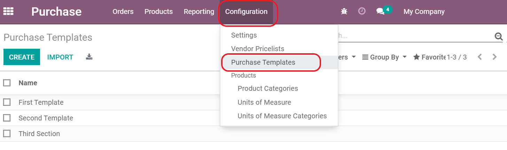
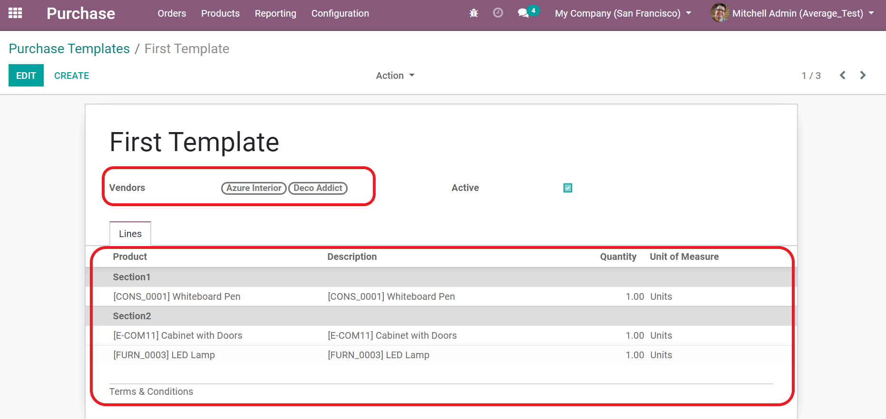
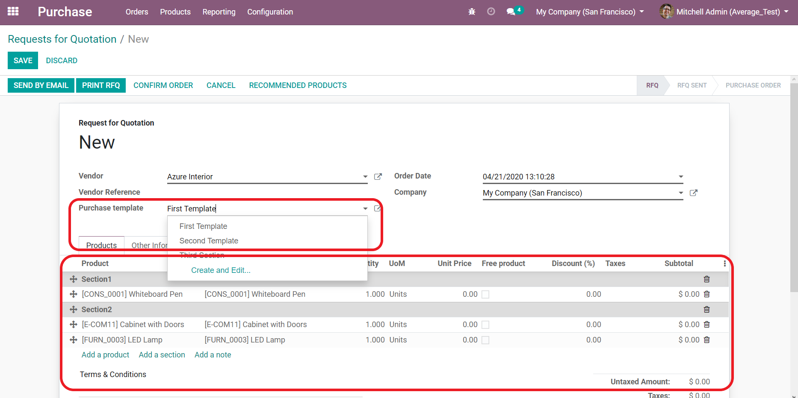

when you select vendor and sub vendor if they are a companies

This module helps the user creating custom quotation templates, you will save a lot of time. Indeed, with the use of templates, you will be able to send complete quotations at a fast pace. after that if you select push to internal companies in template the selector vendor_id will be the company that will create po and so orders to it and sub vendor will create sale order to it and all will created when confirm the original po , if we move to last created so in the third company we can change quantity in all receipt and delivery if i select only vendor in template will create only so in the second company if select the third will create so and po in second company and so in third we can change delivered quantity in any picking and if we validate in any one all will validate and create bill and invoice for suatable orders if quantity negative will create returned bill or invoice
This module works on Enterprise and Community Edition.
To Create new Purchase Template, you will find "Purchase Templates" menu under "Configuration" menu.

You can link the template with specific Vendors, If you select no vendor the template will appear for all vendors, Also create templates lines

Select Purchase Template to add related product to Purchase Order from that template

when you select vendor and sub vendor if they are a companies
when we select specific template and press confirm po and so will created and posted iin vendor and so will created and posted in sub vendor

when we and we can chang delivery or receipt quantity in any created and reflect in other and when validate invoice and bil suatable will created